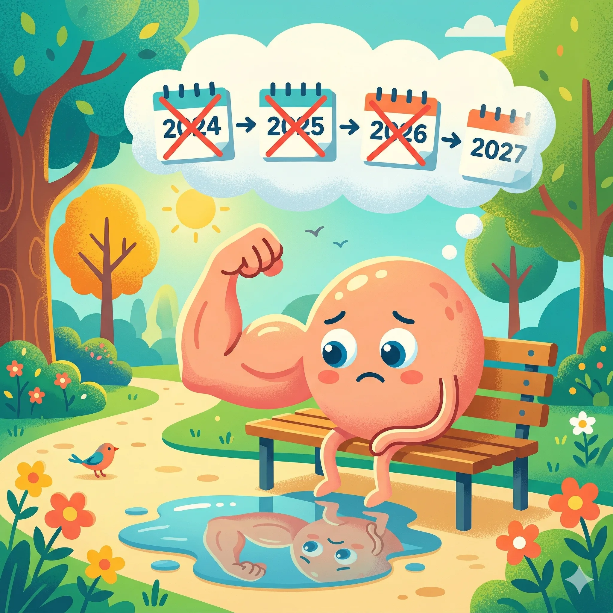
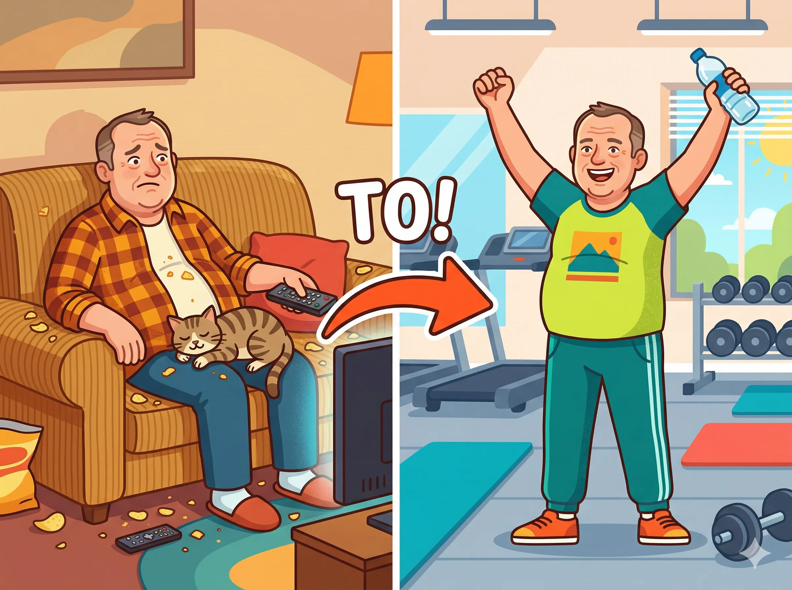
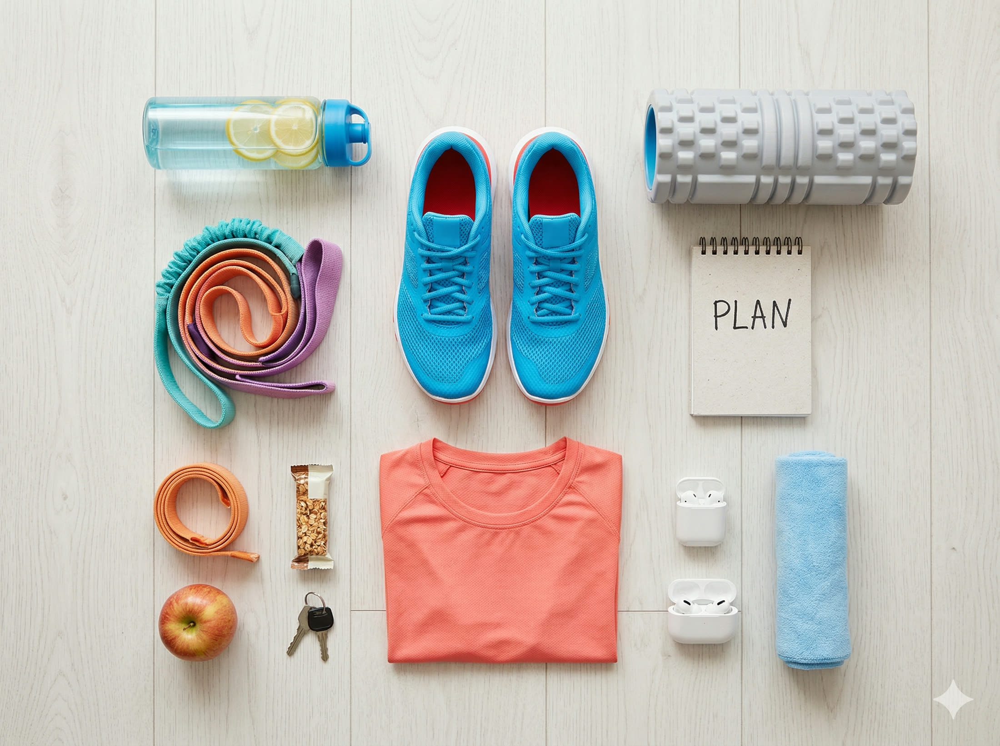

Hej, mówię Wam szczerze – kiedy skończyłem 50 lat i wyjrzałem w lustro, nie byłem z siebie za bardzo dumny. Kilogramy się zebrały, kondycja gdzieś uciekła, wchodzenie po schodach bez zadyszki stało się marzeniem, a założenie skarpetki na stojąco na jednej nodze to porażka. Znacie to uczucie? Spoko, jesteście w dobrym miejscu. Właśnie dlatego napisałem ten artykuł – żebyś wiedział dokładnie, jak ruszyć tyłek i zacząć, bez głupich błędów, bez kontuzji i bez obciachu. Zrobię to razem z Tobą, krok po kroku. Czytaj dalej, bo to może być najlepsze, co zrobisz dla siebie w tym roku.
Kluczowe wnioski
- Najważniejsze: Hej, mówię Wam szczerze – kiedy skończyłem 50 lat i wyjrzałem w lustro, nie byłem z siebie za bardzo dumny.
- W artykule znajdziesz konkrety o: KROK 1 MOTYWACJA – CZYLI DLACZEGO W OGÓLE MAM TO ROBIĆ?.
- Drugi kluczowy temat: KROK 2 NAJPIERW BADANIA – BEZ TEGO ANI RUSZ!.
KROK 1MOTYWACJA – CZYLI DLACZEGO W OGÓLE MAM TO ROBIĆ?
Zacznijmy od najważniejszej rzeczy – od głowy. Bo wiesz co? Możesz mieć najlepszy plan treningowy na świecie, najdroższe buty i karnet w wypasionej siłowni w mieście, ale jeśli nie masz mocnego DLACZEGO – to i tak odpuścisz po tygodniu.
Znajdź swoje własne DLACZEGO
Siądź sobie spokojnie, weź kawę (bez cukru, ale do tego dojdziemy) i napisz na kartce lub w telefonie, dlaczego chcesz wrócić do formy. Nie pisz 'bo powinienem' – to za mało. Pisz konkretnie:
- Chcę bawić się z wnukami bez zadyszki
- Chcę znowu wejść w te spodnie, co leżą od 3 lat na półce
- Chcę żyć dłużej i zdrowiej – mam plany i nie zamierzam rezygnować
- Chcę czuć się dobrze we własnej skórze, kiedy wchodzę na plażę
- Chcę mieć energię wieczorami, a nie padać o 20:00
To są PRAWDZIWE powody. I wiesz co? Mówię Ci – zapisz to i wróć do tej kartki za każdym razem, kiedy nie będzie Ci się chciało wyjść z domu.
Zmień nastawienie – to nie kara, to nagroda
Wiem, wiem – siłownia brzmi jak tortura. Ale posłuchaj: każdy trening to coś, co DAJESZ swojemu ciału, nie coś, co mu ZABIERASZ. To inwestycja, nie poświęcenie. Po 50-tce aktywność fizyczna to nie fanaberia – to konieczność, żeby cieszyć się życiem w pełni.
✅ Badania pokazują, że już kilka tygodni regularnego treningu radykalnie poprawia samopoczucie, jakość snu i poziom energii. To coś, co poczujesz na własnej skórze naprawdę szybko.
Ustaw cel realistycznie – bez szaleństw na start
Mówię Wam wprost: nie będziesz wyglądał jak Stallone po 3 miesiącach. Ale za to po 3 miesiącach możesz wejść bez zadyszki na 4. piętro, wstać rano bez bólu pleców i poczuć, że żyjesz, a nie tylko egzystujesz. To jest właśnie prawdziwy cel na start. Małe cele, wielkie zmiany.

KROK 2NAJPIERW BADANIA – BEZ TEGO ANI RUSZ!
Słuchajcie – i tu jestem z Wami absolutnie poważny. Zanim zrobisz pierwszy wykrok na siłownię, MUSISZ pójść do lekarza. Wiem, że to ostatnia rzecz, na którą masz ochotę, ale to podstawa i absolutnie nie wolno tego pomijać. Po 50-tce organizm nie jest taki sam jak w 20-tce, i to jest fakt. Są jakieś programy w Centrach Medycznych specjalnie pod sport. Koszt nie przewyższa kupna nowej koszulki.
Dlaczego badania są obowiązkowe?
Serce i układ krążenia są szczególnie narażone podczas wysiłku fizycznego po długiej przerwie. Niektórzy uważają się za zdrowych, a potem okazuje się, że mają nadciśnienie, które wcześniej nie dawało objawów, albo poziom cukru jest za wysoki, co zmienia dobór ćwiczeń. Lepiej to wiedzieć PRZED niż dowiedzieć się na bieżni.
Lista badań, które musisz zrobić
Badania podstawowe (absolutne minimum):
- Morfologia krwi z rozmazem – żebyś wiedział, czy nie masz anemii, stanów zapalnych, problemów z krwią
- Glukoza na czczo – wykrycie cukrzycy lub stanu przedcukrzycowego, co zmienia plan treningowy
- Profil lipidowy (cholesterol, HDL, LDL, trójglicerydy) – ważny dla zdrowia serca
- Kwas moczowy – jeśli miewałeś bóle stawów, to obowiązkowe
- TSH (tarczyca) – niedoczynność tarczycy to złodziej energii, sprawdź koniecznie
- Badanie moczu ogólne – kontrola nerek i dróg moczowych
- Ciśnienie tętnicze – zmierz i powtarzaj regularnie
Badania serca – bardzo ważne po 50-tce:
- EKG spoczynkowe – podstawowe badanie serca, koniecznie przed intensywnym treningiem
- EKG wysiłkowe (test na bieżni) – jeśli lekarz zdecyduje, że jest wskazany – pozwala sprawdzić serce pod obciążeniem
- ECHO serca – jeśli masz historię chorób serca w rodzinie lub podwyższone ciśnienie
Układ ruchu – szczególnie jeśli bolą stawy:
- Konsultacja ortopedyczna – jeśli masz bóle kolan, bioder, kręgosłupa, to obowiązek
- USG stawów – sprawdzenie stanu chrząstek, więzadeł, łąkotek
- Ocena postawy i zakresu ruchomości – najlepiej u fizjoterapeuty
Dodatkowe – dla kompletnego obrazu:
- Hormony (testosteron u mężczyzn, estrogen u kobiet) – po 50-tce hormony mocno wpływają na efekty treningowe
- Witamina D3 – niedobory są bardzo powszechne i wpływają na mięśnie i kości
- Magnez i żelazo – przy zmęczeniu i skurczach
✅ Powiedz lekarzowi, że planujesz zacząć regularnie trenować na siłowni – on sam zaproponuje odpowiednie badania do Twojej sytuacji.
⚠️ Nie lekceważ wyników! Jeśli cokolwiek odbiega od normy, skonsultuj z lekarzem, jak dostosować trening. To nie jest koniec świata – to tylko punkt startowy.

KROK 3ZAKUPY – ZAINWESTUJ W SIEBIE, BO TO SIĘ OPŁACA!
A teraz coś, co lubię najbardziej – zakupy! I mówię Wam – to nie jest błahostka. Kiedy zakładasz porządny strój, w którym dobrze wyglądasz i dobrze się czujesz, to zupełnie inaczej idziesz na trening. To psychologia, nie wymówka. Dobry sprzęt też naprawdę pomaga.
👜 BUTY – nie oszczędzaj!
Mówię Wam serio – buty to ważna inwestycja. Po 50-tce stawy są wrażliwsze i zła amortyzacja to prosta droga do kontuzji. Nie kupuj 'czegoś z szafy' ani przypadkowych trampek. Buty treningowe to osobna kategoria – zaprojektowana właśnie do tego.
Jakie buty wybrać na siłownię?
Wszystko zależy od tego, co będziesz robić:
Do treningu siłowego (maszyny, wolne ciężary): Potrzebujesz butów z PŁASKĄ, TWARDĄ podeszwą i dobrą stabilizacją boczną. Dobra amortyzacja tu nie pomaga – wręcz przeszkadza, bo odbiera czucie gruntu przy podnoszeniu ciężarów. Szukaj modeli: Nike Metcon, adidas Powerlift, Reebok Nano, New Balance Minimus – to bestsellerowe modele do siłowni. Ja uwielbiam buty płaskie, bez dropa, więc Nike Free Run dla mnie są idealne. Najczęściej widzę ludzi jednak w Metconach.
Do cardio (bieżnia, orbitrek, rower): Tu potrzebujesz dobrej AMORTYZACJI, żeby chronić kolana i biodra. Sprawdzą się: Nike Air, Asics Gel, adidas Cloudfoam, New Balance Fresh Foam. Te technologie realnie chronią stawy – po 50-tce to nie jest luksus, to konieczność.
Uniwersalne (i siłownia, i cardio): Najlepszy wybór na start to buty do treningu ogólnego, które sprawdzą się w obu sytuacjach. Polecam: Nike Free Metcon, Under Armour TriBase, New Balance 608.
✅ Idź do sklepu i PRZYMIERZ buty z tymi samymi skarpetami, w których będziesz trenować. Nigdy nie kupuj butów sportowych online bez wcześniejszego sprawdzenia rozmiaru w sklepie stacjonarnym! Uwaga, skarpety też ważne. Najlepiej kupić jakieś do biegania, będą ok do wszystkiego na siłowni.
⚠️ Nie kupuj butów biegowych do treningu siłowego – zbyt miękka podeszwa przy podnoszeniu ciężarów jest niebezpieczna i zwiększa ryzyko kontuzji.
👕 ODZIEŻ TRENINGOWA – w czym dobrze się czuć
Zapomnij o starej koszulce od piżamy i dresach z hipermarketu. Serio. Dobra odzież treningowa to nie snobizm – to komfort, który sprawia, że chce Ci się trenować. A kiedy dobrze wyglądasz w lustrze siłowni, masz więcej motywacji. Psychologia działa!
Co kupić na start:
KOSZULKI / T-SHIRTY:
- Szukaj materiałów z technologią odprowadzania wilgoci (Dri-FIT Nike, Climalite adidas, HeatGear Under Armour)
- Bawełna NIC – moknie, przykleja się do ciała i jest niekomfortowa przy wysiłku
- Kolor i krój – Twój wybór. Ważne, żebyś czuł się dobrze i pewnie. Ja mówię: zainwestuj w coś, co naprawdę lubisz
- Marki: Nike, adidas, Under Armour, Reebok, 4F (polskie, tańsze i bardzo dobre!)
SPODNIE / SPODENKI:
- Spodnie do ćwiczeń lub spodenki – materiał musi być elastyczny (stretch)
- Unikaj zwykłych dresów – przemakają, jest za gorąco
- Leginsy kompresyjne (dla kobiet i mężczyzn!) – świetnie wspierają mięśnie i stawy kolanowe
- Spodenki do ćwiczeń z materiałem oddychającym – idealne na cardio
BIUSTONOSZ SPORTOWY (dla pań – absolutnie obowiązkowy!):
- Przy intensywniejszym wysiłku dobry biustonosz sportowy to nie opcja, to konieczność
- Szukaj modeli z oznaczeniem 'high impact' lub 'medium impact'
- Polecam: Nike, adidas, Under Armour, Decathlon Domyos
SKARPETY – niedoceniane, a bardzo ważne:
- Nie trenuj w zwykłych bawełnianych skarpetach – mokną i powodują obtarcia
- Kupuj skarpety treningowe z technologią odprowadzania wilgoci
- Dobrze sprawdzają się skarpety Decathlon, Nike Performance, adidas
TORBA TRENINGOWA:
- Prosta i funkcjonalna – kieszeń na buty, ręcznik, bidon, ubranie na zmianę
- Marki: adidas, Nike – nie musisz wydawać fortuny, Decathlon ma świetne opcje za grosze
Ile to wszystko kosztuje?
Mówię Wam szczerze: na start możesz się wyposażyć za 400-700 zł i mieć wszystko, co potrzebne. Nie musisz kupować wszystkiego naraz od razu. Zacznij od butów i jednej koszulki – reszta poczeka na kolejną wypłatę. Albo odwiedź Decathlon – tam znajdziesz przyzwoite rzeczy w dobrej cenie.

KROK 4WYBÓR SIŁOWNI I KARNETU – TO MA ZNACZENIE!
OK, masz motywację, masz wyniki badań, masz nowy sprzęt. Teraz czas wybrać miejsce, gdzie to wszystko się wydarzy. I tu też jest kilka rzeczy, na które warto zwrócić uwagę.
Jak wybrać siłownię?
Moje złote zasady przy wyborze siłowni dla 50-latka:
1. LOKALIZACJA – najważniejsza rzecz!
Siłownia musi być blisko – domu, pracy, po drodze. Jeśli musisz jechać 30 minut specjalnie po nią, to przy pierwszym zmęczeniu odpuścisz. Zasada: siłownia powinna być tak blisko, żeby nie było wymówki, żeby nie pojechać. Ja sam nie korzystam z natrysków ani sauny po ćwiczeniach, więc spadam szybko do samochodu i do domu.
2. SPRAWDŹ OFERTĘ ZAJĘĆ GRUPOWYCH – to bardzo ważne dla 50-latków!
Zajęcia grupowe to złoto, szczególnie na początku. Dlaczego?
- Trener prowadzi Cię przez ćwiczenia – mniej szans na błędną technikę
- Motywacja grupy – kiedy inni ćwiczą, Ty też ćwiczysz
- Poznajesz ludzi w podobnym wieku i o podobnych celach
- Jest super atmosfera – serio!
Szukaj siłowni z zajęciami takimi jak: Body Combat, Pilates, Joga, Aqua Aerobik, Stretching, TRX, Body Balance – to są zajęcia, które świetnie sprawdzają się po 50-tce. Często są w cenie karnetu, warto dopytać.
3. PYTAJ O TRENERÓW!
Dobra siłownia ma trenerów dostępnych na miejscu. Dowiedz się czy w cenie karnetu masz możliwość krótkiej konsultacji z trenerem na początku – wiele siłowni to oferuje! Zapytaj wprost przy zapisywaniu się: 'Czy w cenie karnetu mam możliwość wstępnej konsultacji z trenerem i pokazania mi podstawowych ćwiczeń?' Jeśli odpowiedź brzmi TAK – bingo!
4. ODWIEDŹ SIŁOWNIĘ PRZED ZAKUPEM KARNETU!
Większość siłowni oferuje darmowe wejście próbne. Skorzystaj z tego! Sprawdź: czy jest czysto, czy jest klimatyzacja, czy maszyny są w dobrym stanie, jak personel traktuje klientów, czy jest miejsce parkingowe. Poczuj atmosferę – to ważne.
Jaki karnet wybrać?
Mówię Wam jak jest: zacznij od KARNETU MIESIĘCZNEGO, nie rocznego. Dlaczego? Bo najpierw musisz sprawdzić, czy ta konkretna siłownia Ci odpowiada. Dopiero jak chodzisz regularnie przez 2-3 miesiące, warto pomyśleć o karnecie rocznym – będzie tańszy.
Orientacyjne ceny karnetów w Polsce (2026):
- Jednorazowe wejście: 30-50 zł
- Karnet miesięczny: 100-200 zł (sieciówki taniej, prywatne kluby drożej)
- Karnet kwartalny (3 miesiące): 400-500 zł
- Karnet roczny: znacznie taniej w przeliczeniu na miesiąc
- Zniżki dla seniorów: 10-20% – pytaj, bo nie zawsze jest to wyeksponowane!
- Moja Well Fitness to koszt 130 zł
✅ Wiele siłowni w pakiecie 'Premium' lub 'All-inclusive' ma wliczone zajęcia grupowe. Warto dopłacić kilkadziesiąt złotych więcej miesięcznie, żeby mieć dostęp do grup – to świetna inwestycja na początku!
Nie daj się złapać w pułapkę umowy!
Uwaga: uważaj na długoterminowe umowy w dużych sieciach za 30 zł miesięcznie. Brzmi pięknie, ale często trzeba podpisać umowę na 24 miesiące, a z niej wyjście bywa trudne i kosztowne. Na początek lepiej zapłacić więcej miesięcznie, ale bez zobowiązań.
KROK 5TRENER PERSONALNY – CZY NAPRAWDĘ POTRZEBUJĘ?
Krótka odpowiedź: TAK. Szczególnie na początku. Długa odpowiedź? To zależy od budżetu, ale przynajmniej kilka godzin na start to absolutne minimum. Opowiem Ci, dlaczego.
Dlaczego trener to inwestycja, nie wydatek?
- Nauczy Cię PRAWIDŁOWEJ TECHNIKI – to chroni przed kontuzjami, które po 50-tce leczą się długo
- Ułoży PLAN TRENINGOWY dopasowany do Twojego zdrowia, celów i możliwości
- ZMOTYWUJE Cię – trudno odpuścić, kiedy ktoś na Ciebie czeka
- Pomoże Ci BEZPIECZNIE dobrać obciążenia – nie za małe (bo bez efektów) i nie za duże (bo kontuzja)
- Pokaże Ci siłownię od środka – jak używać maszyn, co jest do czego
Jak wybrać dobrego trenera?
Nie każdy, kto ma mięśnie, jest dobrym trenerem. Sprawdź:
- Certyfikaty i wykształcenie – pytaj wprost, dobry trener nie będzie miał nic do ukrycia
- Doświadczenie z osobami 50+ – to ważne, bo trening dla 50-latka różni się od treningu dla 25-latka
- Podejście – czy słucha Twoich potrzeb i ograniczeń, czy tylko krzyczy
- Opinie – zapytaj w siłowni, kto jest najlepiej oceniany przez starszych klientów
- Darmowa konsultacja wstępna – większość trenerów ją oferuje, skorzystaj zanim zapłacisz
Co powiedzieć trenerowi na pierwszej sesji?
Powiedz trenerowi WSZYSTKO:
- Wyniki badań i ewentualne schorzenia (kolano, plecy, nadciśnienie itp.)
- Ile lat minęło od ostatniej regularnej aktywności
- Jakie masz cele – schudnąć, poprawić kondycję, zbudować siłę?
- Czego się boisz lub czego nie lubisz
- Ile razy w tygodniu możesz trenować
✅ Wiele siłowni oferuje pakiet 'wdrożeniowy' dla nowych klientów – 3-5 treningów z trenerem w atrakcyjnej cenie, które wprowadzają Cię w podstawy. Zapytaj o taką opcję przy zapisywaniu się!
Orientacyjne koszty trenera personalnego:
- Pojedynczy trening (60 min): 80-170 zł (w zależności od miasta i doświadczenia trenera)
- Pakiet 4-5 treningów miesięcznie: 400-650 zł
- Pakiet 10 treningów (kupione z góry): taniej o 5-10%
- Trening w parze (ze znajomym): druga osoba płaci 30-50% ceny
- Plan treningowy bez regularnych spotkań: od ok. 100 zł jednorazowo
Mówię Wam: jeśli budżet jest ograniczony, to skup się na 3-5 treningach na wdrożenie, a potem ćwicz sam z gotowym planem. To wystarczy na dobry start. Ja często wspieram się Instagramem. Jest dużo porad jak wykonywać prawidłowo ćwiczenia i jakie zestawy. Na siłowni śmiało wyciągasz telefon i próbujesz odwzorować ćwiczenia. To nie obciach, każdy tak się wspiera i nie ma w tym nic dziwnego, że czegoś nie wiesz.
KROK 6PIERWSZY TRENING – CO CIĘ CZEKA I JAK TO PRZEŻYĆ
OK, zapisałeś się, kupiłeś ciuchy, zrobiłeś badania. Jesteś gotowy. I wchodzisz na siłownię po raz pierwszy (albo po wielu latach przerwy) ... i czujesz się obco. Setki maszyn, młodsze osoby dookoła, wszystko brzęczy i hałasuje. Nie panikuj. Mówię Ci – każdy tam zaczynał od zera.
Pierwsze 2 tygodnie – adaptacja
Te dwa tygodnie mają jeden cel: przyzwyczaić ciało i głowę do regularności. Zapomnij o efektach – na to przyjdzie czas. Teraz chodzi o to, żeby WEJŚĆ W RYTM. Staraj się bywać na początku zawsze w tych samych godzinach. Jest szansa, że kogoś poznasz i łatwiej będzie się zaaklimatyzować. Większość ludzi chodzi tam w miarę systematycznie więc każda pora ma swoich uczestników.
- Trenuj 2-3 razy w tygodniu, nie więcej, tak na początek
- Każdy trening niech trwa 45-60 minut – nie 2 godziny!
- Zacznij od ćwiczeń z własną masą ciała i lekkich maszyn
- ZAWSZE zacznij od rozgrzewki (10-15 minut)
- ZAWSZE kończ rozciąganiem (10 minut)
- Pij wodę, a najlepiej wodę z elektrolitami. Kup sobie w aptece, koniecznie bez cukru
Przykładowy plan pierwszych tygodni
Tygodnie 1-4: Fundamenty
- Trening obwodowy całego ciała 2-3 razy w tygodniu
- Ćwiczenia z maszynami z lekkim obciążeniem
- Cardio o niskiej intensywności: spacer na bieżni, orbitrek, rower stacjonarny (15-20 minut)
- Rozciąganie i ćwiczenia mobilizacyjne na każdym treningu
- Trochę musisz się spocić 😊
Tygodnie 5-8: Budowanie bazy
- Powoli zwiększaj obciążenia – jeśli ostatnie powtórzenia są za łatwe, czas dodać odrobinę ciężaru. Teraz jest nowa świadomość, że lepiej mniej powtórzeń z większym ciężarem niż więcej z mniejszym
- Cardio zwiększ do 20-30 minut
- Możesz zacząć chodzić na zajęcia grupowe – pilates, body balance, stretching to świetne opcje. Zwłaszcza stretching bo to zawsze samemu gorzej idzie, przynajmniej mnie 😊
- Zacznij notować swoje treningi – co ćwiczyłeś, z jakim obciążeniem. Warto bo to mobilizuje zawsze
Miesiąc 3 i dalej: Progresja
- Pełny trening siłowy 3 razy w tygodniu z koncentracją na technice
- Cardio 3-4 razy w tygodniu (można łączyć z siłownią)
- Stopniowo zwiększaj intensywność – to klucz do efektów
Ćwiczenia, od których warto zacząć
Mówię Wam: zacznij od ćwiczeń wielostawowych i maszyn – to bezpieczniejsze niż wolne ciężary na początku. Podstawowe ruchy, które powinny być w Twoim planie:
Dolna część ciała:
- Przysiady na maszynie (leg press) – świetne dla kolan, można kontrolować zakres
- Wyprosty nóg i zginanie nóg na maszynie
- Wspięcia na palce – dla łydek i stabilności
Górna część ciała:
- Wyciskanie na maszynie (klatka piersiowa)
- Ściąganie drążka (linka) – plecy
- Uginanie ramion z hantlami (biceps) – lekkie hantle
- Wyciskanie nad głowę (ramiona) – maszyna lub lekkie hantle
Core (brzuch i plecy):
- Plank (deska) – zacznij od 15-20 sekund, buduj stopniowo
- Mostek biodrowy – świetny dla pośladków i odcinka lędźwiowego
- Ćwiczenia na rotatory – ważne dla zdrowych pleców
✅ Zacznij od MNIEJSZEGO OBCIĄŻENIA niż myślisz, że powinieneś. Technika jest ważniejsza od ciężaru. Przez pierwsze tygodnie masz uczyć się ruchu, a nie bić rekordy.
ROZGRZEWKA – nigdy jej nie pomijaj!
Mówię Wam poważnie: po 50-tce stawy i mięśnie potrzebują więcej czasu, żeby się rozgrzać. Pominięcie rozgrzewki to prosta droga do naderwania mięśnia lub kontuzji stawu. 10-15 minut inwestycji = ochrona na cały trening. Ja latami ćwiczyłem bez stretchingu i rozciągania i dzisiaj żałuję. Nadrabiam, ale mozolna sprawa.
- 5 minut marszu lub jazdy na rowerku w spokojnym tempie
- Krążenia ramionami, barkami, biodrami
- Wypady (wykroki) bez obciążenia
- Przysiady z własną masą ciała – 10-15 sztuk
- Rozciąganie dynamiczne (NIE statyczne przed treningiem!)
KROK 7CZEGO UNIKAĆ – BŁĘDY, KTÓRE MOGĄ CIĘ KOSZTOWAĆ KONTUZJĘ
Czas na to, co najważniejsze z punktu widzenia bezpieczeństwa. Mówię Wam z doświadczenia i z wiedzy ekspertów – te błędy popełniają prawie wszyscy 50-latkowie wracający na siłownię. Uniknij ich!
⚠️ BŁĄD 1: Zaczynanie od zbyt dużych ciężarów To jest numer jeden wśród kontuzji. 'Kiedyś to dźwigałem 80 kg, więc zacznę od 40' – NIE. Zacznij od 20% tego, co kiedyś unosiłeś. Mięśnie wróci szybciej niż myślisz, ale ścięgna i stawy potrzebują więcej czasu na adaptację.
⚠️ BŁĄD 2: Pomijanie rozgrzewki i rozciągania Wiem, że Ci się spieszy. Ale bez rozgrzewki jesteś jak zimny silnik na pełnych obrotach – coś pęknie. Obowiązkowo 10-15 minut przed treningiem i 10 minut rozciągania po.
⚠️ BŁĄD 3: Trenowanie z bólem. Ból to sygnał od ciała. Dyskomfort mięśniowy przy ćwiczeniu to normalne. Zakwasy na następny dzień, to znak dobrego treningu, ale ostry ból w stawie, kłucie, pieczenie to natychmiast STOP. Trenowanie przez ból to najkrótsza droga do poważnej kontuzji.
⚠️ BŁĄD 4: Za dużo, za szybko 'Będę chodzić 5 razy w tygodniu!' – i po 2 tygodniach jest kontuzja lub totalnie odpada motywacja. Zacznij od 2-3 razy w tygodniu. Buduj powoli. Ciało musi mieć czas na regenerację.
⚠️ BŁĄD 5: Brak regeneracji i snu Po 50-tce organizm potrzebuje więcej czasu na odbudowę mięśni. Minimum 7-8 godzin snu, dni odpoczynku między treningami. Mięśnie rosną podczas odpoczynku, nie podczas treningu!
⚠️ BŁĄD 6: Zaniedbanie diety i nawodnienia Możesz trenować najlepiej na świecie, ale bez odpowiedniej diety efektów nie będzie. I pamiętaj o wodzie – podczas treningu pij regularnie małymi łykami, minimum 500 ml podczas sesji.
⚠️ BŁĄD 7: Porównywanie się do innych W siłowni jest 25-latek, który dźwiga podwójnie więcej od Ciebie. I co z tego? Ty nie jesteś tam, żeby go pobić – jesteś tam dla siebie. Jedyna osoba, z którą warto się porównywać, jest Ty sprzed miesiąca.
⚠️ BŁĄD 8: Rezygnacja po pierwszych zakwasach Pierwsze dni po treningu mogą boleć – i to całkiem mocno. To normalne, szczególnie gdy mięśnie były od dawna uśpione. To nie kontuzja, to DOMS – opóźniona bolesność mięśniowa. Mija po 2-4 dniach i z każdym treningiem jest coraz mniejsza.
KROK 8DIETA – BO BEZ TEGO NIE MA EFEKTÓW
Hej, nie napisałem tego artykułu, żeby Ci mówić, że masz siedzieć na sałatkach. Mówię Wam jednak szczerze: trening bez porządnej diety to jak budowanie domu bez fundamentów. Możesz się napracować, a efektów nie będzie.
Podstawowe zasady żywienia dla trenującego 50-latka
1. BIAŁKO to priorytet!
Po 50-tce mięśnie tracą się szybciej niż w młodości (sarkopenia – to normalne zjawisko). Żeby temu przeciwdziałać, potrzebujesz więcej białka. Cel to 1,5-2 gramy białka na każdy kilogram masy ciała dziennie. Dobrej jakości białko to: jajka, kurczak, ryby, twaróg, jogurt grecki, rośliny strączkowe.
2. Jedz przed i po treningu
- Przed treningiem (1,5-2 godziny): lekki posiłek z węglowodanami i białkiem – np. owsianka z jogurtem, kanapka z jajkiem
- Po treningu (do 2 godzin): posiłek z białkiem i węglowodanami – żeby odbudować mięśnie i uzupełnić glikogen
3. Nawodnienie – woda, woda, woda!
Minimum 2-2,5 litra wody dziennie. W dniach treningowych więcej. Odwodnienie drastycznie obniża wydolność i naraża na skurcze mięśni.
4. Ogranicz, nie eliminuj
Nie przechodź na restrykcyjną dietę. Ogranicz cukry proste, przetworzoną żywność, alkohol. Nie musisz z czegokolwiek całkowicie rezygnować – ważna jest równowaga i regularność.
✅ Rozważ wizytę u dietetyka, jeśli chcesz schudnąć lub masz dodatkowe schorzenia (cukrzyca, cholesterol). Dobrze zbilansowana dieta to połowa sukcesu!
KROK 9REGENERACJA I DODATKI – ZADBAJ O SIEBIE PO TRENINGU
Co robić po treningu?
- Rozciąganie statyczne (10-15 minut) – dopiero PO treningu, nie przed
- Zimny lub letni prysznic – nie lodowaty, ale chłodny pomaga mięśniom. Mnie się nigdy nie udało wejść pod zimną wodę. Jestem zmarzluchem, więc kocham gorący prysznic 😊
- Rolowanie pianką (wał roller) – świetne na zakwasy i napięte mięśnie, kup, nie pożałujesz
- Odpoczynek i sen – minimum 7-8 godzin
Suplementy – co warto rozważyć?
Mówię Wam szczerze: bez suplementów możesz osiągnąć wszystko. Ale kilka z nich naprawdę pomaga po 50-tce – skonsultuj z lekarzem, czy możesz je stosować:
- Witamina D3 + K2 – niedobory są powszechne, wpływa na kości, mięśnie i odporność
- Magnez – zmniejsza skurcze, poprawia sen i regenerację
- Kolagen – wspiera stawy i ścięgna, co po 50-tce jest naprawdę ważne
- Białko w proszku (np. whey protein) – tylko jeśli nie dajesz rady dostarczyć odpowiedniej ilości białka z jedzenia. Można kupić świetne smakowe. Polecam czekoladę
- Omega-3 – dobre dla serca i stawów
⚠️ Nie kupuj bez konsultacji z lekarzem drogich stacków suplementacyjnych 'na masę' reklamowanych w necie. Wiele z nich jest niepotrzebnych, niektóre mogą wchodzić w interakcje z lekami.
KROK 10MIERZ POSTĘPY I ŚWIĘTUJ KAŻDY SUKCES!
To jest etap, który sprawia, że kontynuujesz, kiedy motywacja opada. Mierzenie efektów pokazuje, że Twoja praca przynosi rezultaty – nawet jeśli waga stoi w miejscu.
Co mierzyć?
- Obwody ciała (talia, biodra, uda, ramiona) – mierz raz w miesiącu, rano, na czczo
- Zdjęcia sylwetki – rób co miesiąc, w tym samym oświetleniu i pozycji
- Waga – nie codziennie! Raz w tygodniu, rano, po toalecie, przed śniadaniem, o stałej porze
- Wyniki treningowe – notuj, z jakimi ciężarami ćwiczysz i ile powtórzeń
- Samopoczucie – oceniaj subiektywnie: energia, sen, nastrój, ból
Mówię Wam – będą tygodnie, kiedy waga nie ruszy, ale obwody się zmniejszą. Albo waga wzrośnie (bo mięśnie ważą więcej niż tłuszcz), a wyglądasz lepiej. Dlatego nie miej obsesji na punkcie wagi. Często następuje rekompozycja ciała, która zakłada osiągnięcie efektów, które daje redukcja i budowanie masy, ale w tym samym czasie. Innymi słowy spalasz tłuszcz a budujesz mięśnie.
✅ Co miesiąc zrób sobie małą nagrodę za regularność treningową – nowa koszulka, masaż, wyjście do restauracji z rodziną. Wzmacniaj pozytywne zachowania!
PODSUMOWANIE – TWÓJ PLAN DZIAŁANIA
OK, zebrałem to wszystko dla Ciebie w jeden krótki plan. Wykonaj kolejno:
- Zapisz DLACZEGO chcesz zacząć i trzymaj to w widocznym miejscu
- Idź do lekarza na podstawowe badania (morfologia, EKG, cholesterol, glukoza, TSH)
- Kup dobre buty treningowe dopasowane do aktywności (siłownia vs cardio)
- Zaopatrz się w odzież treningową z materiałów odprowadzających wilgoć
- Odwiedź 2-3 siłownie w okolicy, skorzystaj z bezpłatnego wejścia próbnego
- Kup karnet miesięczny z opcją zajęć grupowych i zapytaj o wdrożenie z trenerem
- Umów się na 3-5 treningów z trenerem personalnym na wdrożenie i ułożenie planu
- Zacznij od 2-3 treningów tygodniowo, nie forsuj się w pierwszych tygodniach
- Mierz postępy raz w miesiącu i nagradzaj siebie za regularność
- Nie poddawaj się po trudnych tygodniach – wróć do kartki z DLACZEGO i idź dalej!
Żeby ten plan był prostszy do wdrożenia, możesz od razu oprzeć start o checklistę z tekstu jak zacząć na siłowni po 50-tce, przed pierwszym treningiem domknąć temat profilaktyki w artykule jakie badania zrobić przed treningiem po 50-tce, równolegle uporządkować jedzenie dzięki poradnikowi dieta po 50-tce kontra nawyki i podtrzymać regularność przez schemat z materiału motywacja do ćwiczeń po 50-tce.
50 lat to nie koniec. To dopiero początek najlepszej wersji Ciebie.
Dasz radę. Mówię to Wam z pełnym przekonaniem. Zaczynajcie!
fitpo50.pl – bo po pięćdziesiątce można więcej niż myślisz
Źródła
- Cruz-Jentoft AJ et al. Sarcopenia: revised European consensus on definition and diagnosis (EWGSOP2). Age Ageing, 2019.
- Fiatarone MA et al. High-intensity strength training in nonagenarians. JAMA, 1990.
- Bauer J et al. Evidence-based recommendations for optimal dietary protein intake in older people (PROT-AGE). J Am Med Dir Assoc, 2013.
- Cheung K et al. Delayed onset muscle soreness: treatment strategies and performance factors. Sports Med, 2003.
- WHO Guidelines on Physical Activity and Sedentary Behaviour, 2020.
- CDC: Physical activity guidelines for older adults (aktualizacja 2025-12-04).
⚠️ Ten materiał ma charakter edukacyjny i nie zastępuje indywidualnej konsultacji lekarskiej.
FAQ
Od czego zacząć powrót do formy po 50-tce?
Najpierw od prostego planu i bazowych badań, potem od regularnych, krótkich treningów. Najważniejsze jest bezpieczne wejście w rytm, a nie szybkie tempo.
Czy po 50-tce trzeba od razu iść na siłownię?
Nie. Możesz zacząć od marszu, ćwiczeń z masą ciała i prostych ruchów w domu. Siłownia to opcja, nie warunek startu.
Jak uniknąć kontuzji na początku?
Wybieraj łatwiejsze warianty ćwiczeń, zwiększaj obciążenie stopniowo i zostawiaj dzień na regenerację. Ból ostry lub narastający to sygnał, żeby skonsultować plan.
Co jest ważniejsze: dieta czy trening?
Oba elementy są ważne, ale na starcie najlepiej uprościć dietę i utrzymać regularny ruch. Stabilne nawyki dają lepszy efekt niż perfekcja przez tydzień.